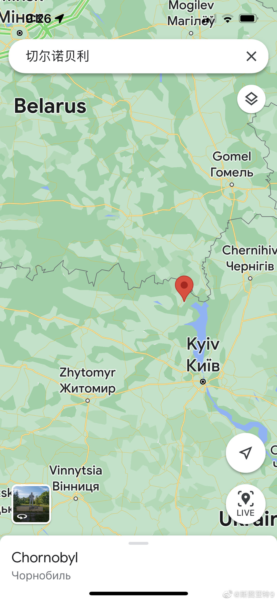
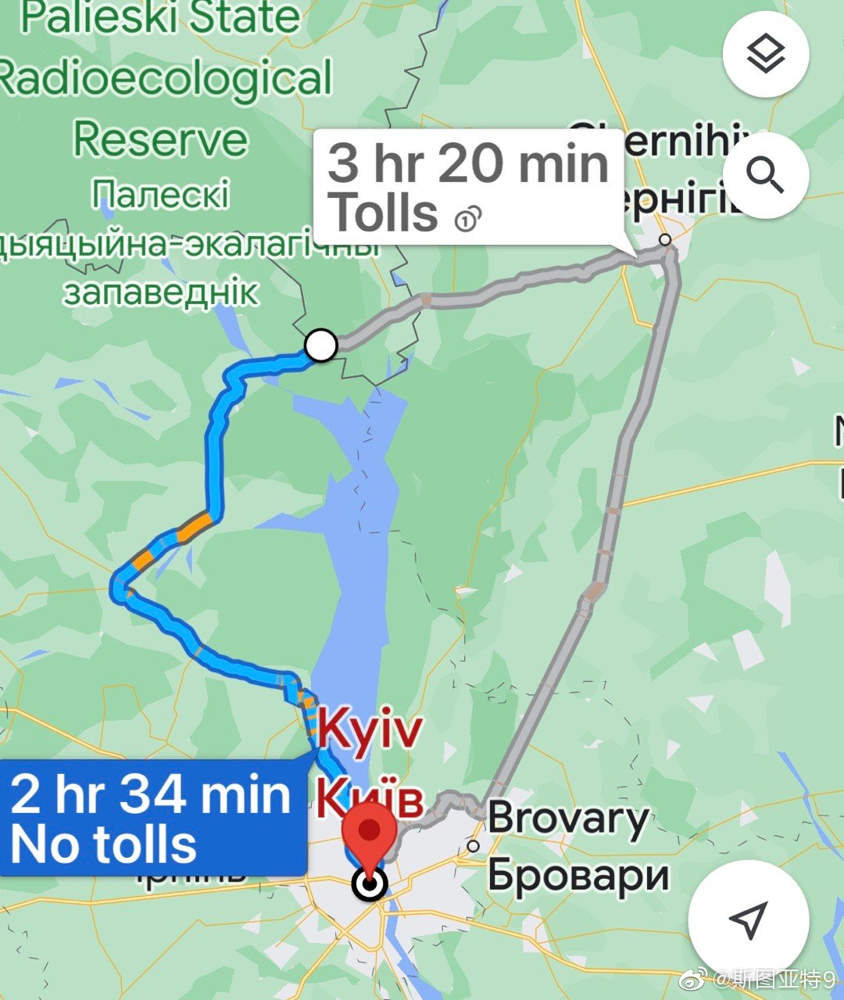

最开始俄军占领切尔诺贝利，是因为切尔诺贝利正好处在从白俄罗斯边境到基辅最近的道路上。谷歌地图显示这条路离基辅市中心仅有153公里，两个半小时车程（白俄罗斯边境离基辅直线距离90公里）。俄军希望闪电战用最快的速度到达基辅周边，打乌军一个措手不及，自然选择了这条道路。这个策略应该说部分成功。俄军的确迅速到达了基辅周边并展开攻击，但最终并没有攻下基辅。转为阵地战后，这条路线的后勤补给是有很大问题的，逐渐转为守势并退缩。很可能因为难以坚持而从这条路线撤退（这并不等于俄军放弃攻击基辅的，只是需要重新整编）。于是出现了俄军在切尔诺贝利地区挖战壕，把土壤里放射性物质释放出来然后士兵们生病拉回去救治的事。只能说，这种出其不意的战术成功了就成了天才，失败了就成了笑柄。
 网页链接），算是明智了。未来很难预测，但至少这几个国家在Omicron这一波基本是平稳度过，算是软着陆了。
网页链接），算是明智了。未来很难预测，但至少这几个国家在Omicron这一波基本是平稳度过，算是软着陆了。